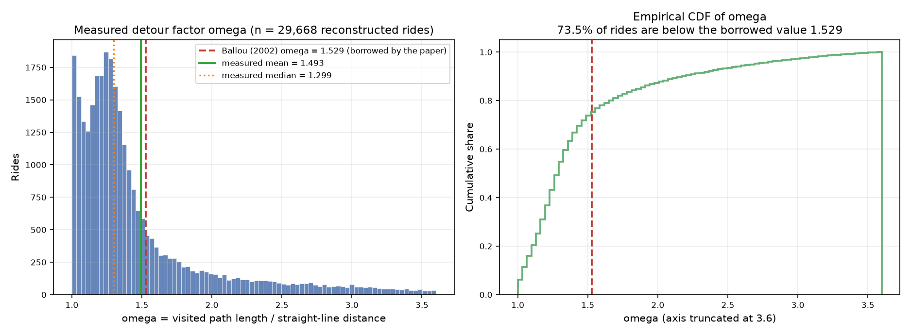
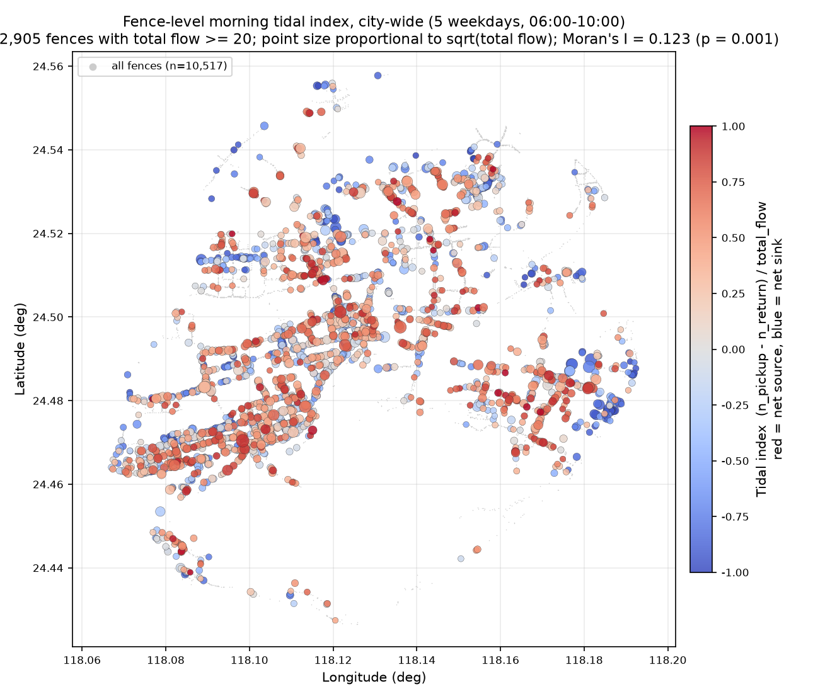

Xiamen shared-bicycle tidal imbalance
Complete
Research question. During the 06:00–10:00 peak, how is shared-bicycle
demand out of balance across Xiamen's electronic fences — and how far can a single
borrowed detour factor be trusted when a rebalancing plan is priced with it?
212,680
trips rebuilt
29,668
rides with measured ω
1.493
mean ω (borrowed: 1.529)
0.716
Louvain modularity


(pickups − returns) ÷ (pickups + returns) over five mornings, range
[−1, +1]. Red fences emit bicycles, blue fences accumulate them; point size scales with
√(total flow). Axes are WGS-84 latitude/longitude in degrees. Moran's I = 0.123
(p = 0.001), so the imbalance is spatially clustered at street scale.
What I found
- The tide is street-scale, not district-scale. 1,075 fences are net sources and 1,049 are net sinks; the share of net-source fences falls from 47.8 % at 06:00–06:30 to 37.5 % at 08:00–08:30, the slot where net sinks peak. A district-level rebalancing plan would average away exactly the signal an operator needs.
- The borrowed constant misprices most trips. Measured ω averages 1.493 (median 1.299, 95th percentile 2.82) and differs significantly by fence role (p = 1.5 × 10−12) and by hour (p = 4.1 × 10−4); the zone contrast survives a robust regression that also controls for hour. Using one constant overstates the cost of the many short residential rides and understates the long tail.
- Flow direction beats demand similarity for operations. At the same granularity, communities built on the OD flow graph are more modular (0.716 vs 0.642) and 3.9× better net-flow balanced than the published distance + demand-correlation affinity clustering, at a statistically tied silhouette score.
- Honest validation is humbling. Under leave-one-day-out validation the demand model reaches MAE 3.730 / R² 0.430 (r = 0.670); on a genuinely held-out future morning it reaches MAE 2.734 / R² 0.704. Reporting the weaker, date-grouped number is the point.
Limitation. The archive covers five consecutive weekdays with exactly one
rainy day, so weather is perfectly confounded with day-of-week and is treated as a
control variable only, not causal. Everything reported is an association from one
city, one morning peak, with no rider identifiers and no counterfactual. ω is measured on
continuous tracking episodes rather than confirmed trips, and the 50 m fence-snap radius is
a modelling choice whose effect I report as a sensitivity table (1.90 % match with
containment alone, 88.72 % at 200 m).